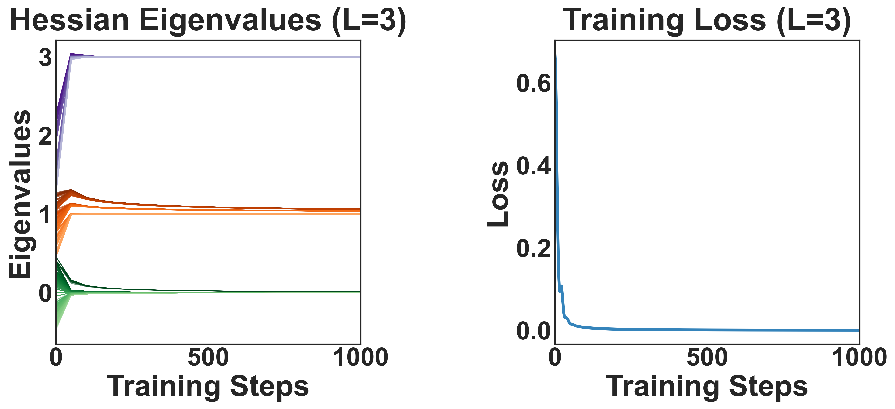
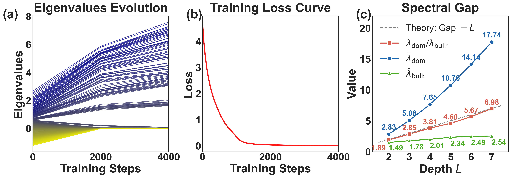

ISIT 2026
TL;DR: The Hessian's bulk-and-spike spectrum is usually blamed on imbalanced data. We prove it comes from depth: even with perfectly whitened data, a depth-$L$ network's Hessian still splits into a dominant cluster and a bulk cluster — and the gap between them scales exactly as the depth $L$.
The eigenvalue distribution of the Hessian plays a crucial role in understanding the optimization landscape of deep neural networks. Prior work attributes the well-documented "bulk-and-spike" spectral structure — a few dominant eigenvalues separated from a bulk of smaller ones — to imbalance in the data covariance matrix. We challenge this view by demonstrating that such spectral bifurcation can arise purely from the network architecture, independent of data imbalance.
Analyzing a deep linear network, we prove that even when the data covariance is perfectly balanced, the Hessian still exhibits a bifurcation: a dominant cluster and a bulk cluster. Crucially, we establish that the ratio between dominant and bulk eigenvalues scales linearly with the network depth. This reveals that the spectral gap is strongly affected by the network architecture rather than solely by data distribution, suggesting that both model architecture and data characteristics should be considered when designing optimization algorithms.
The Hessian $H_L=\nabla^2 L(W)$ of a deep network has a famously ill-conditioned spectrum: a few dominant eigenvalues (spikes) sit far above a bulk of much smaller ones. Formally, there is an index $k$ splitting the spectrum into two well-separated clusters,
$$ \underbrace{\lambda_1,\dots,\lambda_k}_{\text{dominant spikes}} \in [ma,\, m(a+\delta)], \qquad \underbrace{\lambda_{k+1},\dots,\lambda_p}_{\text{bulk}} \in [a,\, a+\delta], \qquad m \gg 1. $$
A prevailing line of work — much of it built on Random Matrix Theory — ties this gap to the imbalance of the input data covariance: the Hessian inherits its spikes from a few large directions in the data. This raises the central question:
Q1. Is the spectral bifurcation of $H_L$ (with $k$ spikes and gap $m$) exclusively attributable to the spectral imbalance of the input-data covariance?
Data imbalance is not a necessary condition. We whiten the data so the covariance and cross-covariance are identity-like, removing every source of imbalance — and the bifurcation survives, driven entirely by depth.
Even with perfectly balanced covariance ($\Sigma_{xx}\simeq I$) and cross-covariance ($\Sigma_{yx}=UV^\top$), the Hessian still splits into a dominant cluster and a bulk cluster. Data imbalance is not required.
The dominant-to-bulk eigenvalue ratio scales linearly with depth, $\lambda_{\text{dom}}/\lambda_{\text{bulk}}=\Theta(L)$ — and exactly $L$ under uniform spectral initialization. Deeper networks are intrinsically more ill-conditioned.
Ill-conditioning severity is intrinsic to model design, not only the data. Optimizer design should account for architecture (depth) alongside data characteristics.
To isolate depth from data, we study a depth-$L$ deep linear network $F(\mathbf{x}) = W^L\cdots W^1\mathbf{x}$ trained with squared loss under gradient descent, following the analytical settings of Arora et al. and Singh et al. The data is whitened ($\Sigma_{xx}\simeq I_{d_*}$) and the target is aligned with the initialization ($\Sigma_{yx}=U\mathcal{I}_rV^\top$), so no imbalance can leak in from the data.
We analyze the loss Hessian through the Gauss–Newton decomposition $H_L = H_o + H_f$ into the outer-product Hessian $H_o$ and the functional Hessian $H_f$. The nonzero spectrum of $H_o$ coincides with that of a Gram matrix $B_o^{1/2}A_o^\top A_o B_o^{1/2}$ whose Kronecker structure we compute in closed form — the key to the result below.
A key lemma shows that all weight matrices share a common spectral structure throughout training, so the dynamics are governed by a single set of effective singular values $\lambda_{i,t}$. Building on this, our main theorem characterizes the full Hessian spectrum.
Theorem (Hessian Bifurcation). For a depth-$L$ deep linear network with whitened, aligned data, the Hessian $H_{L,t}$ has a two-cluster spectrum: $r^2$ dominant eigenvalues of order $L\cdot m_t^{2(L-1)}$, a bulk of order $m_t^{2(L-1)}$, and a vanishing zero space — with $\lambda_{\text{dom}}/\lambda_{\text{bulk}}=\Theta(L)$.
The nonzero spectrum splits into exactly three eigenspaces:
| Eigenspace | # eigenvalues | Magnitude |
|---|---|---|
| Dominant | $r^2$ | $\Theta\!\left(L\,m_t^{2(L-1)}\right)$ |
| Bulk | $(d_*+d_L-2r)\,r$ | $\Theta\!\left(m_t^{2(L-1)}\right)$ |
| Zero | remaining | $O\!\left(e^{-L\alpha\eta t}\right)\to 0$ |
Under uniform spectral initialization, the constants collapse and the ratio becomes exact:
$$ \frac{\lambda_{\text{dom}}}{\lambda_{\text{bulk}}} = L. $$
Because the dominant eigenvalues are $\approx L$ times the bulk, the ill-conditioning severity is determined by the architecture, not the data — this is exactly contributions C1 and C2 made precise.
Directions inside the effective parameter space (the $r\times r$ "task" subspace) receive curvature contributions from all $L$ layers at once — each layer can move the end-to-end map along these directions.
Directions outside that subspace only contribute through a single layer, so their curvature is a factor of $L$ smaller.
The result is an $L$-fold gap between the dominant and bulk eigenvalues — a structural property of depth that no amount of data balancing removes.


@inproceedings{deng2026depth,
title = {Depth, Not Data: An Analysis of Hessian Spectral Bifurcation},
author = {Deng, Shenyang and Liao, Boyao and Ouyang, Zhuoli and
Pang, Tianyu and Yang, Yaoqing},
booktitle = {IEEE International Symposium on Information Theory (ISIT)},
year = {2026}
}